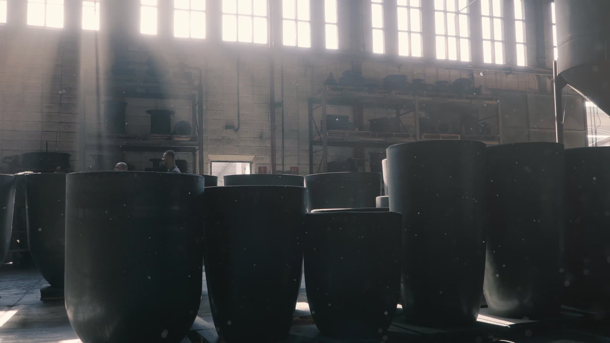
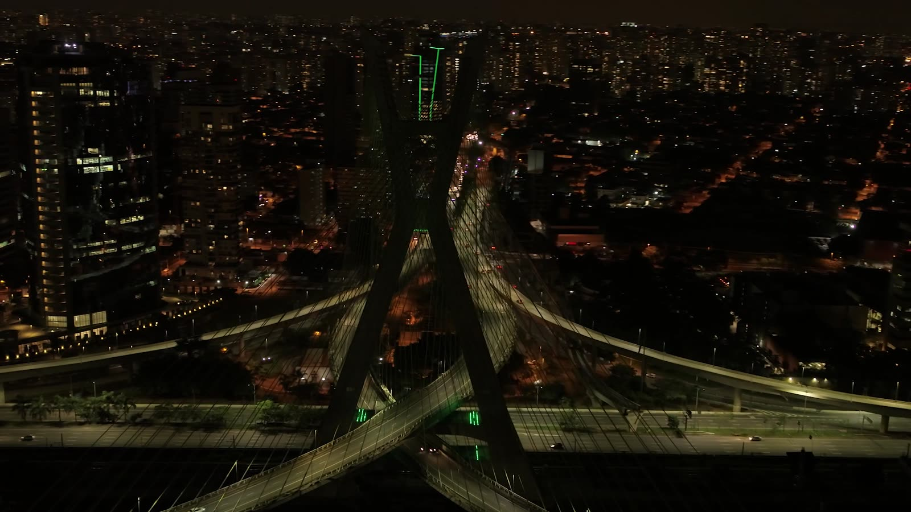

153 Filmes · Produção audiovisual
Experiência para dirigir. Visão para produzir.
da concepção à realização
01 / Trabalhos
Projetos que
viram tela.
passe o mouse para ver · clique para assistirtoque para assistir com som
02 / Clientes & parceiros
Quem confia
na 153 Filmes.
Marcas, empresas e artistas
que fazem parte da nossa história.
- CNN
- Band Sports
- FIAWECFIAWEC
- Sula MirandaMúsica
- way262Way 262
- way153Way 153
- way364Way 364
- ÁguiaCursosEducação
03 / A produtora
Conteúdo com direção.
Produção com identidade.
A 153 Filmes reúne experiência criativa e visão de produção para conceber, desenvolver e realizar projetos audiovisuais.
Uma atuação que conecta diferentes dimensões do audiovisual: direção, produção, programação, gestão e desenvolvimento de conteúdo.
Qualidade, eficiência e identidade em projetos para televisão e diferentes plataformas.
do começo ao fim
- 01
Concepção
ideia, roteiro e estratégia
- 02
Desenvolvimento
formato, planejamento e equipe
- 03
Produção
do set à finalização
- 04
Realização
pronto para a tela

cada formato com sua linguagem
04 / Quem está à frente
Luiz Lippel
Junior.
Diretor · Produtor · Executivo Audiovisual
no mercado audiovisual
- AlagoasDireção da TV Farol e rádios do grupo
- ParaíbaDiretor artístico e de programação · TV Tambaú (SBT)
- São PauloDireção de produção · GNT e projetos especiais da TV Globo
- DocumentárioDireção da série A Chave · Canal Futura
- Hoje153 Filmes · The Golf Brasil · Sula Miranda
Um olhar construído na prática.
Da gestão à realização.
Jornalista, Luiz construiu sua carreira na gestão e realização audiovisual. Em Alagoas, dirigiu a TV Farol e as rádios do grupo. Na Paraíba, foi diretor artístico e de programação da TV Tambaú, afiliada do SBT.
Em São Paulo, atuou como diretor de produção em programas da GNT, como Base Aliada e Descontroladas, e participou de grandes projetos especiais de televisão, entre eles a Expedição Xingu, exibida pelo Fantástico, da TV Globo.
Sua trajetória também inclui a direção de projetos documentais, com destaque para A Chave, série exibida pelo Canal Futura e dedicada a histórias e desafios de educadores brasileiros.
À frente da 153 Filmes, participa da concepção, gestão e realização dos projetos da produtora. Atualmente, é diretor do The Golf Brasil e responsável pela direção audiovisual dos projetos da cantora Sula Miranda.
Programa da GNT em que Luiz Lippel Junior atuou como diretor de produção.
Programa da GNT com direção de produção de Luiz Lippel Junior.
Grande projeto especial de televisão exibido pelo Fantástico, da TV Globo.
Série documental exibida pelo Canal Futura, dedicada a histórias e desafios de educadores brasileiros.
Atualmente, Luiz Lippel Junior é diretor do The Golf Brasil.
Responsável pela direção audiovisual dos projetos da cantora Sula Miranda.

05 / Vamos conversar
Seu próximo projeto
começa aqui.
Da ideia à tela: conte para a gente o que você quer realizar.